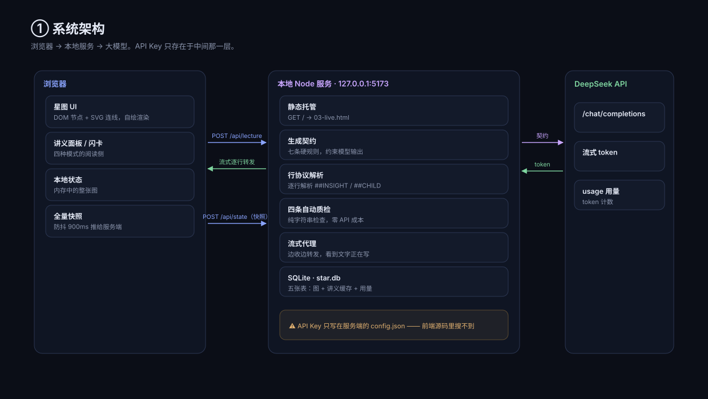
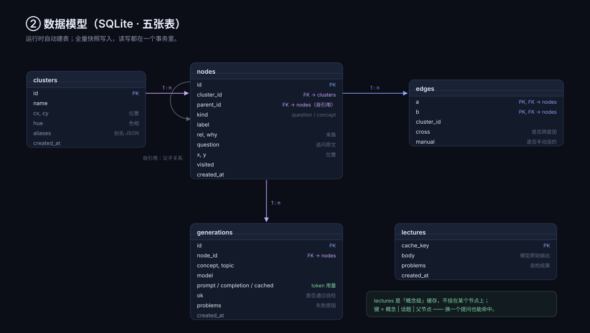
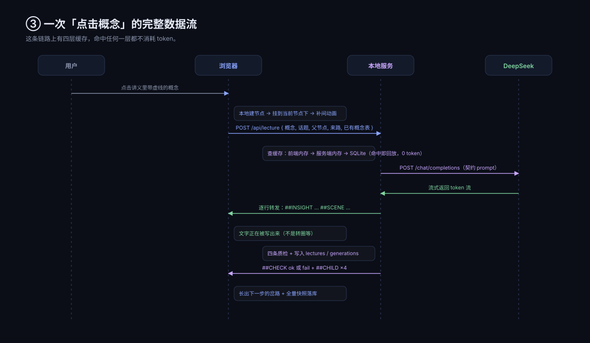

星图 · 技术页
三张图，直接截进 PPT。也可以右键图片「另存为」—— PowerPoint 支持直接插入 .svg。
① SYSTEM ARCHITECTURE

② DATA MODEL

③ DATA FLOW

讲解顺序建议
：先讲架构图那句「Key 只存在于中间那一层」→ 再讲 ER 图里 lectures 为什么是概念级缓存 → 最后用数据流图收尾，落在「四层缓存，命中任何一层都不消耗 token」。